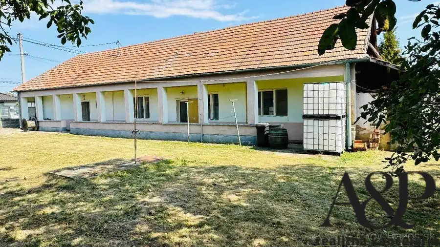
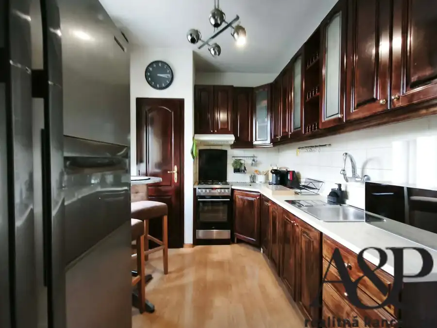

Na prenájom 2 izb. byt vo výbornej lokalite, 59m2, štúrova ul., Nitra
Nitra
- Dispozícia2-izbový
- Plocha59 m²
- Poschodie3. z 5
- StavKompletná rekonštrukcia
- Energetická triedaB
O nehnuteľnosti
A&P REALITNÁ KANCELÁRIA Vám vo výhradnom zastúpení majiteľa ponúka na prenájom 2 izbový byt nachádzajúci sa na Štúrovej ulici v Nitre. Nachádza vo vyhľadávanej lokalite mesta Nitra a ponúka komfortné bývanie s kompletným zariadením. Vďaka svojej dispozícii a lokalite je vhodný nielen na vlastné bývanie, ale aj ako zaujímavá investičná príležitosť.ZÁKLADNÉ INFORMÁCIE:- podlahová plocha: 59m2- k bytu prislúcha pivnica- výťah- poschodie: 3/5- stav: kompletná rekonštrukcia- orientácia na svetové strany: S,J- správca bytového domu:- byt voľný: ihneďDOPLŇUJÚCE INFORMÁCIE O BYTE:- bezpečnostné vchodové dvere- plastové okná- priestranná vstupná chodba a dve priestranné izby- rekonštruované murované bytové jadro- rekonštrukcia elektroinštalácie- rekonštrukcia vodoinštalácie- vymenené radiátory- plávajúce podlahy a keramické dlažby- interiérový kamenný obklad- v izbe vstavané skrine- kuchyňa s dostatkom úložného priestoru a praktickou komorou- kuchyňa ponúka jedálenskú časť, ktorá môže byť taktiež v obývacej izbe- drevené interiérové dvere a obložky- kúpeľňa s vaňou- v kúpeľni priestor pre práčku- samostatné WC- byt sa predáva kompletne zariadený- pripravený na okamžité bývanie bez nutnosti ďalších investíciíDOPLŇUJÚCE INFORMÁCIE O BYTOVOM DOME:- udržiavaný bytový dom- výborná dostupnosť služieb- pokojné a príjemné bývanie v centre mestaINFORMÁCIE O LOKALITE:Štúrova ulica patrí medzi atraktívne lokality mesta Nitra vďaka svojej výbornej dostupnosti a občianskej vybavenosti. Lokalita ponúka komfort mestského bývania s kompletnou dostupnosťou služieb.V blízkom okolí sa nachádza:- obchodné prevádzky a služby- reštaurácie a kaviarne- zdravotná starostlivosť- školy a škôlky- zastávky MHD- centrum mesta v pešej dostupnostiAk máte záujem o obhliadku, neváhajte nás kontaktovať na tel. čísle 0918 400 204 alebo e-mailom na adrese gubric@aprealestate.sk.Text a fotografie sú dielom a majetkom A&P Real Estate.Ušetríme Vám čas aj peniaze – s najlepším financovaním Vám bezplatne pomôže náš hypošpecialista. Zabezpečíme kompletný právny servis prostredníctvom našej právnickej kancelárie, katastrálny servis.
Parametre
| Bezpečnosť | Bezpečnostné dvere, Elektronická brána |
|---|---|
| Cena vrátane energií | Nie |
| Doprava | Diaľkový autobus, Diaľnica, MHD, Cesta, Vlak, Cyklistická infraštruktúra |
| Druh | 2 izbový byt |
| Dátum zverejnenia | 23. 7. 2026 |
| Energetický certifikát budovy | B |
| Energie | 150 |
| Orientácia | Severná, Južná |
| Podlažie | 3 |
| Počet nadzemných podlaží | 5 |
| Počet pivníc | 1 |
| Počet spální | 1 |
| Príprava teplej vody | Súbežne s ÚK |
| Stav nehnuteľnosti | Kompletná rekonštrukcia |
| Telekomunikácie | Internet, Káblová TV, Optická sieť |
| Typ | Prenájom |
| Typ konštrukcie | Tehlová |
| Vybavenie | Pivnica, Vonkajšie parkovacie miesto, Vyhradené parkovanie, Detské ihrisko |
| Vykurovanie | Ústredné |
| Zdroj tepla | Teplo z kotolne |
| Úžitková plocha | 59 m² |
Kde to je


Mohlo by Vás zaujímať

DomNové10 Cena dohodou4 izb. rodinný dom, pozemok 1443m2, Branč, okr. Nitra Branč 120 m² A&P REALITNÁ KANCELÁRIA Vám vo výhradnom zastúpení majiteľa ponúka na predaj jedinečný rodinný dom, ktorý sa nachádza v obci Branč,…
BytNové10 Cena dohodouNa predaj 2 izb. byt vo výbornej lokalite, 59m2, štúrova ul., Nitra Nitra 2-izbový59 m²3. podlažie A&P REALITNÁ KANCELÁRIA Vám vo výhradnom zastúpení majiteľa ponúka na predaj 2 izbový byt nachádzajúci sa na Štúrovej ulici v Nitre. Nachádza…